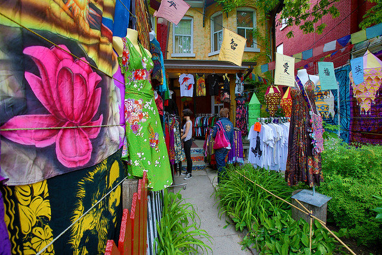

Toronto is a big and exciting city with lots to see and do. If you only have a limited number of hours here, you should try to make the most of it. Here is our guide to exploring downtown Toronto in a day (or two) inspired by many of our guests who have been here on a 24 hour visit :)
If you’re starting at Gosling’s Landing, fuel yourself up with a big cup of coffee or tea. Head down south to Graffiti Alley and make sure you turn right so you don’t miss the big mural with the cool fish! Circle back up to Queen Street West, do some window shopping, grab a big breakfast, and head towards Spadina Avenue (pronounced spuh-dine-nuh). Turn up north (left) and walk through Chinatown, maybe stop for some bubble tea, and then explore Kensington Market (one of the best neighbourhoods in Toronto). Hop into a few shops, try something new… and if you don’t come out feeling a little hipper, then you haven’t gotten enough of it!
Next stop will be Nathan Phillips Square/ City Hall to see the Toronto sign (it looks more beautiful lit up at night, if you have time and can save this for an evening). Snap a few pictures and head towards Eaton Centre. If you’re not keen on malls, you can skip it. Whether you dodge it or stroll through it, you can find your way to Yonge and Dundas Square on the other side (mini Times Square).
From here you can take public transportation (a streetcar and bus) to the St. Lawrence Market. This is a great opportunity for a lunch break. Try Toronto's famous peameal bacon sandwich or some other yummy treats. Depending on how far you’d like to explore, you can walk over to the Distillery District a little further east and see where millions of litres of whisky were once produced. The beautiful red brick buildings of this popular site have been converted into little shops and boutiques that are fun to check out.
Catch a streetcar to the CN Tower. Whether you want to spend the $40 to go up is up to you. We think the glass floor is pretty neat, though our guests have given us mixed reviews. (We’ll soon come out with a blog called “Is CN Tower worth it?” and we'd love to hear from you)
Other places to see time permitting are Union Station, Harbourfront, and the Financial District. If you have one or even half a day more, we’d highly suggest taking a ferry to the Toronto Islands for about $7 round trip. The ride is approximately 10 minutes each way. If you don’t have time to explore the islands, the ferry ride is really the best part. The view of the skyline, especially at sunset, is one of the nicest views you’ll have of the city.
And there you have it. Our one day Toronto itinerary. Of course, you don't need to see all of this and not in this order. But this will show you the best of Toronto in one day based on our guest recommendations.
Suggested time you should spend at each place (excluding travel time):
Graffiti Alley (15 minutes)
Queen Street West (20 minutes)
Chinatown (20 minutes)
Kensington Market (30 minutes)
City Hall (15 minutes)
Eaton Centre (10 minutes)
Yonge and Dundas Square (15 minutes)
St. Lawrence Market (30 minutes)
Distillery District (25 minutes)
CN Tower (depends)
Have a question or suggestion? Get in touch!
blogGL
Toronto in One Day (or Two)
December 2019

